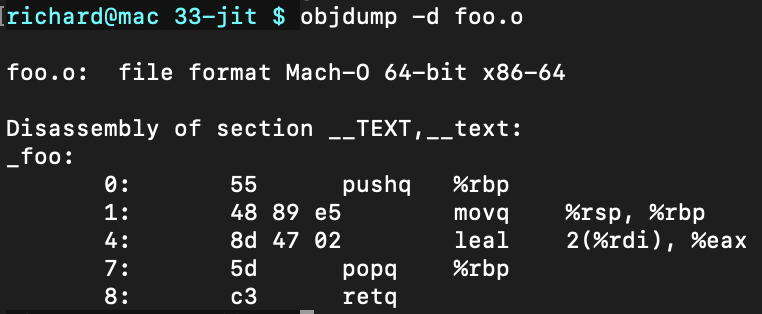
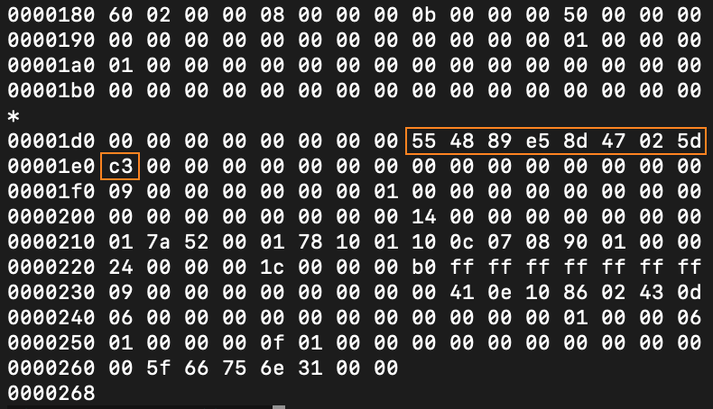
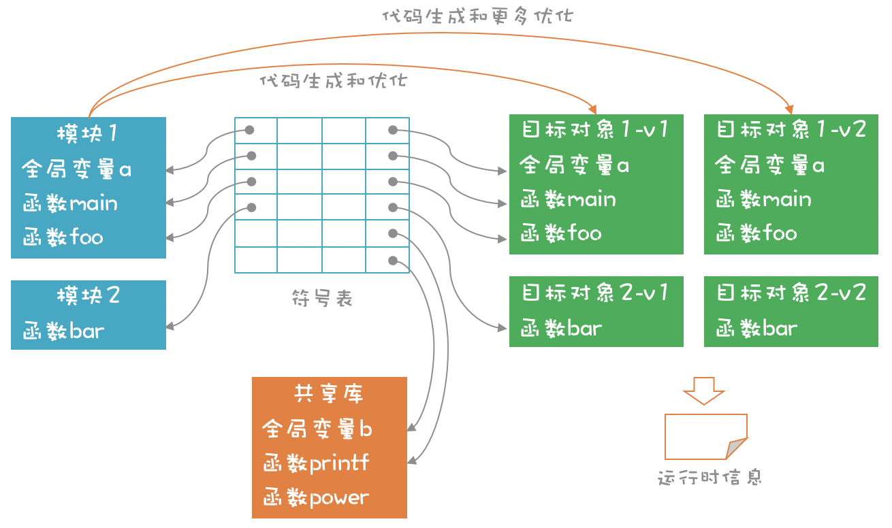

- 00 开篇词 为什么你要学习编译原理？.md
- 01 理解代码：编译器的前端技术.md
- 02 正则文法和有限自动机：纯手工打造词法分析器.md
- 03 语法分析（一）：纯手工打造公式计算器.md
- 04 语法分析（二）：解决二元表达式中的难点.md
- 05 语法分析（三）：实现一门简单的脚本语言.md
- 06 编译器前端工具（一）：用Antlr生成词法、语法分析器.md
- 07 编译器前端工具（二）：用Antlr重构脚本语言.md
- 08 作用域和生存期：实现块作用域和函数.md
- 09 面向对象：实现数据和方法的封装.md
- 10 闭包： 理解了原理，它就不反直觉了.md
- 11 语义分析（上）：如何建立一个完善的类型系统？.md
- 12 语义分析（下）：如何做上下文相关情况的处理？.md
- 13 继承和多态：面向对象运行期的动态特性.md
- 14 前端技术应用（一）：如何透明地支持数据库分库分表？.md
- 15 前端技术应用（二）：如何设计一个报表工具？.md
- 16 NFA和DFA：如何自己实现一个正则表达式工具？.md
- 17 First和Follow集合：用LL算法推演一个实例.md
- 18 移进和规约：用LR算法推演一个实例.md
- 19 案例总结与热点问题答疑：对于左递归的语法，为什么我的推导不是左递归的？.md
- 20 高效运行：编译器的后端技术.md
- 21 运行时机制：突破现象看本质，透过语法看运行时.md
- 22 生成汇编代码（一）：汇编语言其实不难学.md
- 23 生成汇编代码（二）：把脚本编译成可执行文件.md
- 24 中间代码：兼容不同的语言和硬件.md
- 25 后端技术的重用：LLVM不仅仅让你高效.md
- 26 生成IR：实现静态编译的语言.md
- 27 代码优化：为什么你的代码比他的更高效？.md
- 28 数据流分析：你写的程序，它更懂.md
- 29 目标代码的生成和优化（一）：如何适应各种硬件架构？.md
- 30 目标代码的生成和优化（二）：如何适应各种硬件架构？.md
- 31 内存计算：对海量数据做计算，到底可以有多快？.md
- 32 字节码生成：为什么Spring技术很强大？.md
- 33 垃圾收集：能否不停下整个世界？.md
- 34 运行时优化：即时编译的原理和作用.md
- 35 案例总结与热点问题答疑：后端部分真的比前端部分难吗？.md
- 36 当前技术的发展趋势以及其对编译技术的影响.md
- 37 云编程：云计算会如何改变编程模式？.md
- 38 元编程：一边写程序，一边写语言.md
- 加餐 汇编代码编程与栈帧管理.md
- 用户故事 因为热爱，所以坚持.md
- 第二季回归 这次，我们一起实战解析真实世界的编译器.md
- 结束语 用程序语言，推动这个世界的演化.md
34 运行时优化：即时编译的原理和作用
前面所讲的编译过程，都存在一个明确的编译期，编译成可执行文件后，再执行，这种编译方式叫做提前编译（AOT）。 与之对应的，另一个编译方式是即时编译（JIT），也就是，在需要运行某段代码的时候，再去编译。其实，Java、JavaScript等语言，都是通过即时编译来提高性能的。
那么问题来了：
- 什么时候用AOT，什么时候用JIT呢？
- 在讲运行期原理时，我提到程序编译后，会生成二进制的可执行文件，加载到内存以后，目标代码会放到代码区，然后开始执行。那么即时编译时，对应的过程是什么？目标代码会存放到哪里呢？
- 在什么情况下，我们可以利用即时编译技术，获得运行时的优化效果，又该如何实现呢？
本节课，我会带你掌握，即时编译技术的特点，和它的实现机理，并通过一个实际的案例，探讨如何充分利用即时编译技术，让系统获得更好的优化。这样一来，你对即时编译技术的理解会更透彻，也会更清楚怎样利用即时编译技术，来优化自己的软件。
首先，来了解一下，即时编译的特点和原理。
了解即时编译的特点及原理
根据计算机程序运行的机制，我们把，不需要编译成机器码的执行方式，叫做解释执行。解释执行，通常都会基于虚拟机来实现，比如，基于栈的虚拟机，和基于寄存器的虚拟机（在32讲中，我带你了解过）。
与解释执行对应的，是编译成目标代码，直接在CPU上运行。而根据编译时机的不同，又分为AOT和JIT。那么，JIT的特点，和使用场景是什么呢？
一般来说，一个稍微大点儿的程序，静态编译一次，花费的时间很长，而这个等待时间是很煎熬的。如果采用JIT机制，你的程序就可以像，解释执行的程序一样，马上运行，得到反馈结果。
其次，JIT能保证代码的可移植性。在某些场景下，我们没法提前知道，程序运行的目标机器，所以，也就没有办法提前编译。Java语言，先编译成字节码，到了具体运行的平台上，再即时编译成，目标代码来运行，这种机制，使Java程序具有很好的可移植性。
再比如，很多程序会用到GPU的功能，加速图像的渲染，但针对不同的GPU，需要编译成不同的目标代码，这里也会用到即时编译功能。
最后，JIT是编译成机器码的，在这个过程中，可以进行深度的优化，因此程序的性能要比解释执行高很多。
这样看来，JIT非常有优势。
而从实际应用来看，原来一些解释执行的语言，后来也采用JIT技术，优化其运行机制，在保留即时运行、可移植的优点的同时，又提升了运行效率，JavaScript就是其中的典型代表。基于谷歌推出的V8开源项目，JavaScript的性能获得了极大的提升，使基于Web的前端应用的体验，越来越好，这其中就有JIT的功劳。
而且据我了解，R语言也加入了JIT功能，从而提升了性能；Python的数据计算模块numba也采用了JIT。
在了解JIT的特点，和使用场景之后，你有必要对JIT和AOT在技术上的不同之处有所了解，以便掌握JIT的技术原理。
静态编译的时候，首先要把程序，编译成二进制目标文件，再链接形成可执行文件，然后加载到内存中运行。JIT也需要编译成二进制的目标代码，但是目标代码的加载和链接过程，就不太一样了。
首先说说目标代码的加载。
在静态编译的情况下，应用程序会被操作系统加载，目标代码被放到了代码区。从安全角度出发，操作系统给每个内存区域，设置了不同的权限，代码区具备可执行权限，所以我们才能运行程序。
在JIT的情况下，我们需要为这种动态生成的目标代码，申请内存，并给内存设置可执行权限。我写个实际的C语言程序，让你直观地理解一下这个过程。
我们在一个数组里，存一段小小的机器码，只有9个字节。这段代码的功能，相当于一个C语言函数的功能，也就是把输入的参数加上2，并返回。
/*
* 机器码，对应下面函数的功能：
* int foo(int a){
* return a + 2;
* }
*/
uint8_t machine_code[] = {
0x55, 0x48, 0x89, 0xe5,
0x8d, 0x47, 0x02, 0x5d, 0xc3
};
你可能问了：你怎么知道这个函数，对应的机器码是这9个字节呢？
这不难，你把foo.c编译成目标文件，然后查看里面的机器码就行了。
clang -c -O2 foo.c -o foo.o
或者
gcc -c -O2 foo.c -o foo.o
objdump -d foo.o
objdump命令，能够反编译一个目标文件，并把机器码，和对应的汇编码都显示出来：

另外，用“hexdump foo.o”命令显示这个二进制文件的内容，也能找到这9个字节（图中橙色框中的内容）。

这里多说一句，如果你喜欢深入钻研的话，那么我建议你研究一下，如何从汇编代码生成机器码（实际上就是研究汇编器的原理）。比如，第一行汇编指令“pushq %rbp”，为什么对应的机器码，只有一个字节？如果指令一个字节，操作数一个字节，应该两个字节才对啊？
其实，你阅读Intel的手册之后，就会知道这个机器码为什么这么设计。因为它要尽量节省空间，所以实际上，很多指令和操作码，会被压缩进，一个字节中去表示。在32讲中，研究字节码的设计时，你应该发现了这个规律。这些设计思路都是相通的，如果你要设计自己的字节码，也可以借鉴这些思想。
说回我们的话题，既然已经有了机器码，那我们接着再做下面几步：
- 用mmap申请9个字节的一块内存。用这个函数（不是malloc函数）的好处是，可以指定内存的权限。我们先让它的权限是可读可写的。
- 然后用memcp函数，把刚才那9个字节的数组，拷贝到，所申请的内存块中。
- 用mprotect函数，把内存的权限，修改为可读和可执行。
- 再接着，用一个int(*)(int)型的函数指针，指向这块内存的起始地址，也就是说，该函数有一个int型参数，返回值也是int。
- 最后，通过这个函数指针，调用这段机器码，比如fun(1)。你打印它的值，看看是否符合预期。
完整的代码在jit.cpp里。
借这个例子，你可能会知道，通过内存溢出来攻击计算机是怎么回事了。因为只要一块内存是可执行的，你又通过程序写了一些代码进去，就可以攻击系统。是不是有点儿黑客的感觉？所以在jit.cpp里，我们其实很小心地，把内存地址的写权限去掉了。
如果你愿意深究，我建议你，再看一眼objdump打印的汇编码。你会发现，其中开头为0、1和7的三行是没有用的。根据你之前学过的汇编知识，你应该知道，这三行实际是保存栈指针、设置新的栈指针的。但这个例子中，都是用寄存器来操作的，没用到栈，所以这三行代码对应的机器码可以省掉。
最后，只用4个字节的机器码也能完成同样的功能：
//省略了三行汇编代码的机器码：
uint8_t machine_code1[] = {
0x8d, 0x47, 0x02, 0xc3
};
现在，你应该清楚了，动态生成的代码，是如何加载到内存，然后执行了吧？
不过，刚刚这个函数比较简单，只做了一点儿算术计算。通常情况下，你的程序会比较复杂，往往在一个函数里，要调用另一个函数。比如，需要在foo函数里，调用bar函数。这个bar函数可能是你自己写的，也可能是一个库函数。执行的时候，需要能从foo函数，跳转到bar函数的地址，执行完毕以后再跳转回来。那么，你要如何确定bar函数的地址呢？
这就涉及目标代码的链接问题了。
原来，编译器生成的二进制对象，都是可重定位的。在静态编译的时候，链接程序最重要的工作，就是重定位（Relocatable），各个符号的地址，包括全局变量、常量的地址和函数的地址，这样，你就可以访问这些变量，或者跳转到函数的入口。
JIT没有静态链接的过程，但是，也可以运用同样的思路，解决地址解析的问题。你编写的程序里的所有全局变量，和函数，都会被放到一个符号表里，在符号表里记录下它们的地址。这样，引用它们的函数就知道正确的地址了。
更进一步，你写的函数，不仅可以引用你自己编写的，程序中的对象，还可以访问共享库中的对象。比如，很多程序，都会共享libc库中的标准功能，这个库的源代码超过了几百万行，像打印输出这样的基础功能，都可以用这个库来实现。
这时候，你可以用到动态链接技术。动态链接技术运用得很普遍，它是在应用程序加载的时候，来做地址的重定位。
动态链接，通常会采用“位置无关代码（PIC）”的技术，使动态库，映射进每个应用程序的空间时，其地址看上去都不同。这样一来，可以让动态库被很多应用共享，从而节省内存空间，而且可以提升安全性。因为固定的地址，有利于恶意的程序，去攻击共享库中的代码，从而危及整个系统。
到目前为止，你已经了解了实现JIT的两个关键技术：
- 让代码动态加载和执行。
- 访问自己写的程序和共享库中的对象。
它们是JIT的核心。至于代码优化和目标代码生成，与静态编译是一样的。了解这些内容之后，你应该更加理解Java、JavaScript等语言，即时编译运行的过程了吧？
当然，LLVM对即时编译提供了很好的支持，它大致的机制是这样的：
我们编写的任何模块(Module)，都以内存IR的形式存在，LLVM会把模块中的符号，都统一保存到符号表中。当程序要调用模块的方法时，这个模块就会被即时编译，形成可重定位的目标对象，并被调用执行。动态链接库中的方法（如printf）也能够被重定位并调用。

在第一次编译时，你可以让LLVM，仅运行少量的优化算法，这样编译速度比较快，马上就可以运行。而对于被多次调用的函数，你可以让LLVM执行更多的优化算法，生成更优化版本的目标代码。而运行时所收集的某些信息，可以作为某些优化算法的输入，像Java和JavaScript都带有这种多次生成目标代码的功能。
带你了解JIT的原理之后，接下来，我再通过一个案例，让你对JIT的作用有更加直观的认识。
用JIT提升系统性能
著名的开源数据库软件，PostgreSQL，你可能听说过。它的历史比MySQL久，功能也比MySQL多一些。在最近的版本中，它添加了基于LLVM的，即时编译功能，性能大大提高。
看一下下面的SQL语句：
select count(*) from table_name where (x + y) > 100
这个语句的意思是：针对某个表，统计一下字段x和y的和大于100的记录有多少条。这个SQL在运行时，需要遍历所有的行，并对每一行，计算“(x + y) > 100”这个表达式的值。如果有1000万行，这个表达式就要被执行1000万次。
PostgreSQL的团队发现，直接基于AST或者某种IR，解释执行这个表达式的话，所用的时间，占到了处理一行记录所需时间的56%。而基于LLVM实现JIT以后，所用的时间只占到6%，性能整整提高了一倍。
在这里，我联系31讲内存计算的内容，带你拓展一下。上面的需求，是典型的基于列进行汇总计算的需求。如果对代码进行向量化处理，再保证数据的局部性，针对这个需求，性能还可以提升很多倍。
再说回来。除了针对表达式的计算进行优化，PostgreSQL的团队还利用LLVM的JIT功能，实现了其他的优化。比如，编译SQL执行计划的时间，缩短了5.5倍；创建b树索引的时间，降低了5%~19%。
那么32讲中，我提到，将一个规则引擎，编译成字节码，这样在处理大量数据时，可以提高性能。这是因为，JVM也会针对字节码做即时编译。道理是一样的。
课程小结
对现代编程语言来说，编译期和运行期的界限，越来越模糊了，解释型语言和编译型语言的区别，也越来越模糊了。即时编译技术可以生成，最满足你需求的目标代码。那么通过今天的内容，我强调这样几点：
1.为了实现JIT功能，你可以动态申请内存，加载目标代码到内存，并赋予内存可执行的权限。在这个过程中，你要注意安全因素。比如，向内存写完代码以后，要取消写权限。
2.可重定位的目标代码，加上动态链接技术，让JIT产生的代码可以互相调用，以及调用共享库的功能。
3.JIT技术可以让数据库这类基础软件，获得性能上的提升，如果你有志参与研发这类软件，掌握JIT技术会给你加分很多。
一课一思
你参与开发的软件，特别是支持DSL的软件，是否可以用JIT技术提升性能？欢迎在留言区分享你的观点。
最后，感谢你的阅读，如果这篇文章让你有所收获，也欢迎你将它分享给更多朋友。
© 2019 - 2023 Liangliang Lee. Powered by gin and hexo-theme-book.